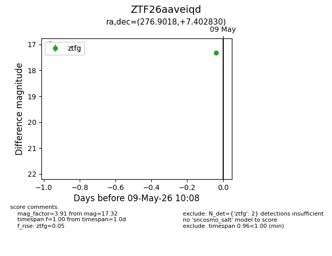
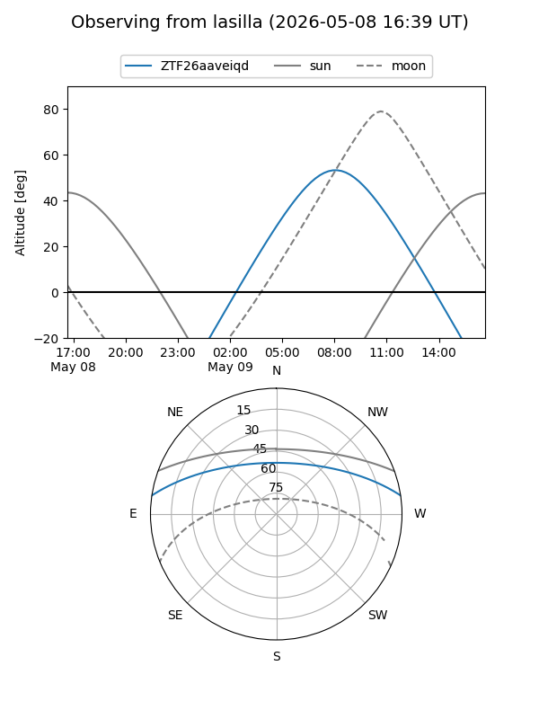
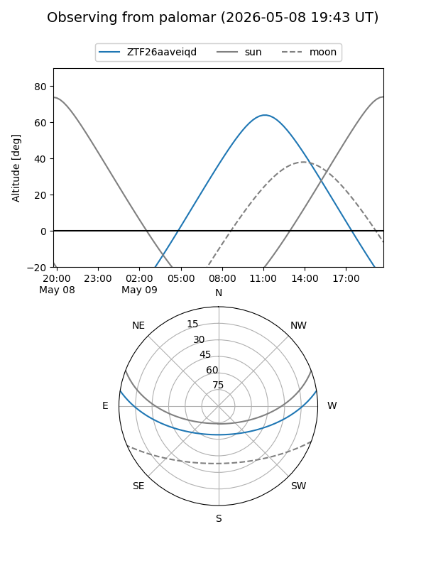
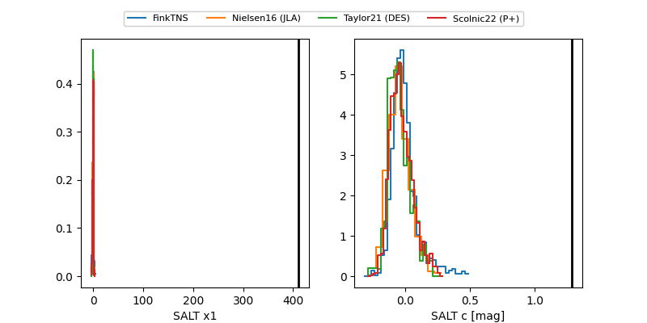

ZTF26aaveiqd
Target ZTF26aaveiqd at 2026-05-09 10:09
Aliases and brokers:
FINK: link
Lasair: link
ALeRCE: link
alt names
ZTF26aaveiqd (ztf,fink_ztf)
Coordinates:
equatorial (ra, dec) = 276.9018,+7.40283
equatorial (HMS+DMS) = 18:27:36.44,+07:24:10.19
galactic (l, b) = (36.8606,+8.64755)
Flags:
Photometry:
last ztfg=17.32
2 ztfg detections
Lightcurve

Visibility


Additional plots
